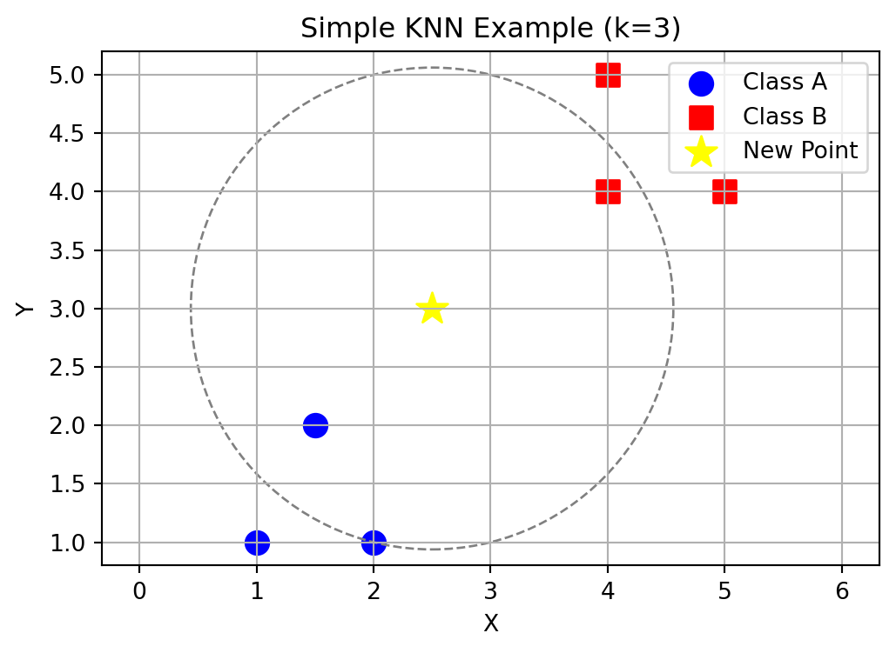
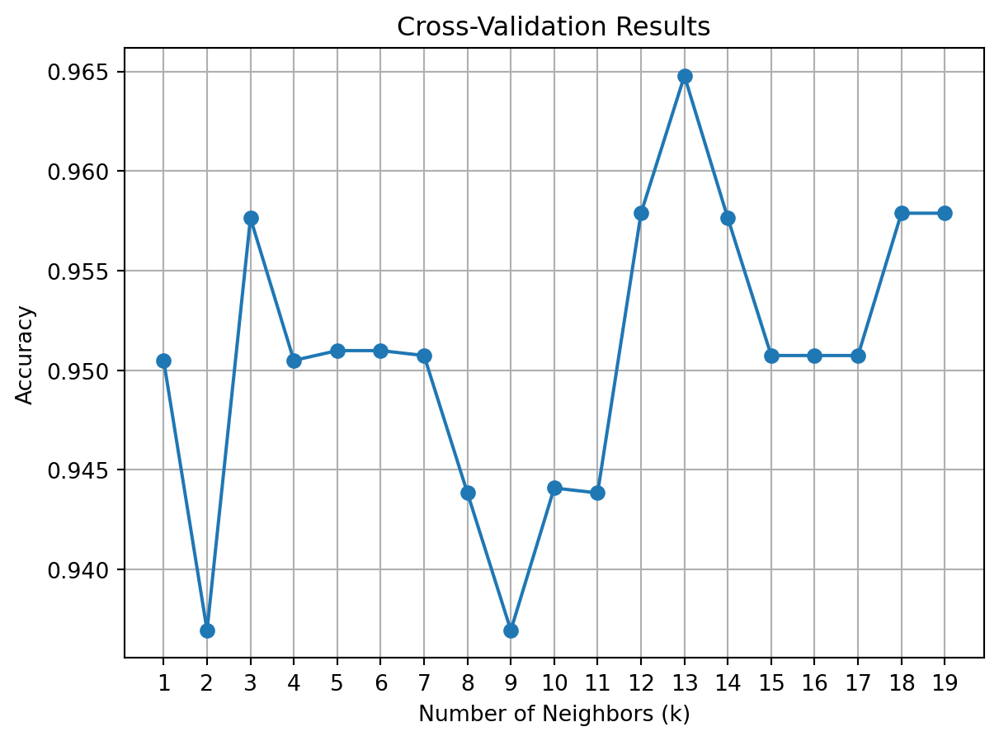
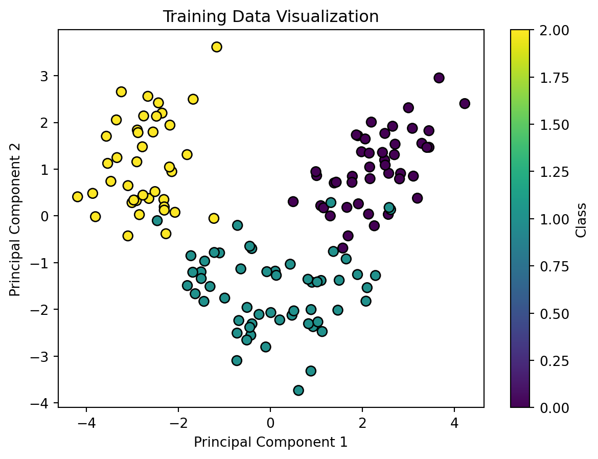

import numpy as np
import matplotlib.pyplot as plt
import pandas as pd
from sklearn.datasets import load_wine
from sklearn.model_selection import train_test_split
from sklearn.preprocessing import StandardScaler
from sklearn.neighbors import KNeighborsClassifier
from sklearn.model_selection import cross_val_score
from sklearn.metrics import accuracy_score, confusion_matrix, classification_report
from sklearn.decomposition import PCAMachine learning is a powerful tool that helps us make predictions and classify data. In this notebook, we will guide you step-by-step to build a k-Nearest Neighbors (KNN) model using Python and scikit-learn. We will use the Wine dataset, a simple yet versatile dataset, to illustrate how KNN works.
By the end of this tutorial, you will: - Understand the basics of KNN - Learn how to preprocess data for KNN - Build and evaluate a KNN classifier using scikit-learn - Find the best value for the number of neighbors (‘k’)
Step 0: What is KNN?
KNN (k-Nearest Neighbors) is a fundamental supervised machine learning algorithm used for both classification and regression tasks.
Core Concepts:
Basic Principle:
- For a new data point x, find k closest training samples in the feature space
- For classification: Take majority vote of the k neighbors
- For regression: Take average of the k neighbors
Distance Metrics: The most commonly used distance metric is Euclidean distance: \(d(x, y) = \sqrt{\sum_{i=1}^{n} (x_i - y_i)^2}\)
Algorithm Steps: The algorithm stores all training data points and for each new data point:
- Calculates distance to all training points
- Finds k nearest neighbors
- Takes majority vote (classification) or average (regression)
- Assigns the result to the new point
Advantages and Disadvantages:
KNN is simple to understand, requires no training period, and handles multi-class problems well. It works effectively with both linear and non-linear data. However, it can be computationally expensive for large datasets and is sensitive to irrelevant features and outliers. The algorithm requires feature scaling and can be memory-intensive. It also suffers from the curse of dimensionality, where performance degrades with high-dimensional data.
# data points
class_a = np.array([[1, 1], [1.5, 2], [2, 1]])
class_b = np.array([[4, 4], [4, 5], [5, 4]])
new_point = np.array([2.5, 3])
# Create the plot
plt.figure(figsize=(6, 4))
plt.scatter(class_a[:, 0], class_a[:, 1], c='blue', marker='o', s=100, label='Class A')
plt.scatter(class_b[:, 0], class_b[:, 1], c='red', marker='s', s=100, label='Class B')
plt.scatter(new_point[0], new_point[1], c='yellow', marker='*', s=200, label='New Point')
# Circle for k=3 nearest neighbors
distances = np.sqrt(np.sum((np.vstack([class_a, class_b]) - new_point)**2, axis=1))
k = 3
radius = sorted(distances)[k-1]
circle = plt.Circle((new_point[0], new_point[1]), radius, fill=False, linestyle='--', color='gray')
plt.gca().add_artist(circle)
plt.title('Simple KNN Example (k=3)')
plt.xlabel('X')
plt.ylabel('Y')
plt.legend()
plt.grid(True)
plt.axis('equal')
plt.show()
In this example, we have two clearly separated classes: - Class A (blue circles): 3 points in the bottom-left - Class B (red squares): 3 points in the top-right
The yellow star represents a new point we want to classify. The dashed circle shows the boundary of the 3 nearest neighbors
Looking at the points inside the circle, we can see that more points belong to Class A. Therefore, the new point would be classified as Class A
This simple example shows how KNN makes decisions based on the majority class among the nearest neighbors
Step 1: Load and Explore the Dataset
The Wine dataset is a classic machine learning dataset containing chemical analysis results of wines from Italy. Each sample represents a wine with: - Features: 13 chemical measurements (alcohol content, malic acid, etc.) - Classes: 3 different wine varieties - Size: 178 samples
# Load the Wine dataset
wine = load_wine()
X = wine.data # Features
y = wine.target # Labels# Convert to DataFrame for easier exploration
wine_df = pd.DataFrame(X, columns=wine.feature_names)
wine_df['target'] = y
# Display the first few rows
print(wine_df.shape)
wine_df.head()(178, 14)| alcohol | malic_acid | ash | alcalinity_of_ash | magnesium | total_phenols | flavanoids | nonflavanoid_phenols | proanthocyanins | color_intensity | hue | od280/od315_of_diluted_wines | proline | target | |
|---|---|---|---|---|---|---|---|---|---|---|---|---|---|---|
| 0 | 14.23 | 1.71 | 2.43 | 15.6 | 127.0 | 2.80 | 3.06 | 0.28 | 2.29 | 5.64 | 1.04 | 3.92 | 1065.0 | 0 |
| 1 | 13.20 | 1.78 | 2.14 | 11.2 | 100.0 | 2.65 | 2.76 | 0.26 | 1.28 | 4.38 | 1.05 | 3.40 | 1050.0 | 0 |
| 2 | 13.16 | 2.36 | 2.67 | 18.6 | 101.0 | 2.80 | 3.24 | 0.30 | 2.81 | 5.68 | 1.03 | 3.17 | 1185.0 | 0 |
| 3 | 14.37 | 1.95 | 2.50 | 16.8 | 113.0 | 3.85 | 3.49 | 0.24 | 2.18 | 7.80 | 0.86 | 3.45 | 1480.0 | 0 |
| 4 | 13.24 | 2.59 | 2.87 | 21.0 | 118.0 | 2.80 | 2.69 | 0.39 | 1.82 | 4.32 | 1.04 | 2.93 | 735.0 | 0 |
# Check dataset distribution
print(wine_df['target'].value_counts())target
1 71
0 59
2 48
Name: count, dtype: int64Step 2: Preprocess the Data
Preprocessing is crucial for KNN because the algorithm relies on distance calculations. Features with different scales can skew the results.
# Split the dataset
X_train, X_test, y_train, y_test = train_test_split(X, y, test_size=0.2, random_state=42)
# Scale the features
scaler = StandardScaler()
X_train = scaler.fit_transform(X_train)
X_test = scaler.transform(X_test)Step 3: Build and Train the KNN Model
Now, we’ll create a KNN classifier and train it on the training data.
# Create the KNN model
k = 3 # Set a initial value of k
knn = KNeighborsClassifier(n_neighbors=k)
# Train the model
knn.fit(X_train, y_train)KNeighborsClassifier(n_neighbors=3)In a Jupyter environment, please rerun this cell to show the HTML representation or trust the notebook.
On GitHub, the HTML representation is unable to render, please try loading this page with nbviewer.org.
KNeighborsClassifier(n_neighbors=3)
Step 4: Find the Best Value for ‘k’
The choice of ‘k’ can significantly impact the model’s performance. We will use cross-validation to determine the optimal value for ‘k’.
# Test different values of k
k_values = range(1, 20)
k_scores = []
for k in k_values:
knn = KNeighborsClassifier(n_neighbors=k)
scores = cross_val_score(knn, X_train, y_train, cv=5, scoring='accuracy')
k_scores.append(scores.mean())
# Plot cross-validation results
plt.plot(k_values, k_scores, marker='o')
plt.title('Cross-Validation Results')
plt.xlabel('Number of Neighbors (k)')
plt.ylabel('Accuracy')
plt.xticks(k_values)
plt.grid(True)
plt.show()
# Find the best k
best_k = k_values[np.argmax(k_scores)]
print(f"The best value of k is {best_k} with an accuracy of {max(k_scores):.2f}")
The best value of k is 13 with an accuracy of 0.96Step 5: Evaluate the Model
After determining the best k, re-train the model and evaluate its performance on the test set.
# Re-train with the best k we found
knn = KNeighborsClassifier(n_neighbors=best_k)
knn.fit(X_train, y_train)
y_pred = knn.predict(X_test)
# Evaluate the model
print("Accuracy:", accuracy_score(y_test, y_pred))Accuracy: 0.9722222222222222# show confusion matrix
print("Confusion Matrix:")
confusion_matrix(y_test, y_pred)Confusion Matrix:array([[14, 0, 0],
[ 1, 13, 0],
[ 0, 0, 8]])# show classification report
print("Classification Report:\n", classification_report(y_test, y_pred))Classification Report:
precision recall f1-score support
0 0.93 1.00 0.97 14
1 1.00 0.93 0.96 14
2 1.00 1.00 1.00 8
accuracy 0.97 36
macro avg 0.98 0.98 0.98 36
weighted avg 0.97 0.97 0.97 36
As we can see the results shown above: the KNN model achieved 97% accuracy on the Wine dataset classification task.
From the confusion matrix and classification report, we can see the model made 35 correct predictions out of 36 test samples: - For Class 0: correctly predicted all 14 samples - For Class 1: correctly predicted 13 samples, with 1 sample misclassified as Class 0 - For Class 2: correctly predicted all 8 samples
Step 6: Visualize the Results
To better understand the data and model, we can use Principal Component Analysis (PCA) to reduce the data to two dimensions for visualization.
# Visualization
pca = PCA(n_components=2)
X_train_2D = pca.fit_transform(X_train)
X_test_2D = pca.transform(X_test)
# Scatter plot of training data
plt.scatter(X_train_2D[:, 0], X_train_2D[:, 1], c=y_train, cmap='viridis', edgecolor='k', s=50)
plt.title('Training Data Visualization')
plt.xlabel('Principal Component 1')
plt.ylabel('Principal Component 2')
plt.colorbar(label='Class')
plt.show()
Conclusion
Throughout this tutorial, we’ve explored the k-Nearest Neighbors algorithm and its practical implementation. We started by understanding the fundamental concepts of KNN, then walked through the complete process of building a classifier using the Wine dataset.
We learned how to properly preprocess our data, construct the model, and find the optimal number of neighbors through cross-validation.
Our implementation results with 97% accuracy, demonstrating KNN’s effectiveness for classification tasks. KNN is straightforward to understand and implement, it serves as an excellent introduction to machine learning concepts.